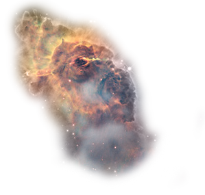

Explorations in Screen Based and Psychotic Computing
My Experience
From Circles to Stars
Created by Joe DePasquale / @astr0Pixel
Psychosis
A mental disorder characterized by a disconnection from reality.
A Grand Vision to Start
I knew I wanted to work on the supernova story from the start. My plan was ambitious and I soon realized I'd need to break it down into a manageable chunk to get something done in 3 weeks.
Starting Small
A circle that wants to be small and red and will fight you to stay that way!
Building Blocks (err...Circles)
Playing around with our in-class coding excercise, Josh and I pair-programmed our way into bouncing circles!
Slides
BTW - this is the first time I've used reveal.js to put together slides for a presentation and it's really cool!
Thinking Before Doing...
Our discussions in the first week of class about audience and why we code provided a great opportunity to step back and think about the overall goals of a project before diving neck deep into code.
An Intermediate Project
Getting tired of circles, I tried my hand at using an existing API to create a "Photoshop in the Browser" experience for visitors to the Chandra X-ray Observatory's image processing tutorial site. It was one line of code:

Digging into the Supernova
After the image editor mini-project, I was ready to start tackling the supernova project. I already knew I was going to focus on the formation and evolution of just a massive star, but even that turned out to be a bit ambitious.
How CSS 3D Transforms Nearly Killed My Computer!
My first attempt at creating an interactive 3D environment without actually using a 3D animation library was encouraging but my laptop hated me. I learned a lot from that excercise and it inspired me to jump into three js.
3D Animation
I didn't expect to focus my time in the class so heavily on 3D animation, but here I am! The scope of the supernova project necessitated using a library optimized for 3D animation. The *final* result is worth the effort.
Far from Done
There's still so much I want to do with this project but having taken it this far in the week and a half that I've had to work on it has inspired me to keep at it.
THE END?
- Thanks Bakhtiar, Alec, and Shaunalynn!
- Thanks to the class for great conversations!
...drinks...